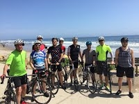

The New Frontiers of Business Cycle Research
March 2-3, 2018

The conference commemorates Thomas Cooley’s edited volume “Frontiers of Business Cycle Research”. The conference will present recent important contributions to business cycle research, and will be the opportunity to discuss the progress made in the field since the book was commissioned 25 years ago. As in Cooley’s volume, the conference will explore applications of dynamic methods to different aspects of the business cycle, including issues related to labor markets, financial factors, fiscal and monetary policies, and international cycles. Organizers are Zachary Bethune, Assistant Professor of Economics at the University of Virginia, Sophie Osotimehin, Assistant Professor of Economics at the University of Virginia, and Eric Young, Professor of Economics at the University of Virginia. The conference will take place at the Upham Hotel Garden room Friday March 2 and Saturday March 3, 2018.
2nd Annual OTC Markets and Securities Conference
October 13-14 2017

The Laboratory for Aggregate Economics and Finance (LAEF) at the University of California, Santa Barbara is pleased to announce the second LAEF OTC Markets and Securities Conference. The meeting will take place at The Upham Hotel in Santa Barbara, Friday October 13, and Saturday October 14, 2017.
The conference theme will be on three sets of topics: (1) over-the-counter (OTC) markets, market-microstructure, and networks; (2) "corporate finance" issues related to OTC traded securities (e.g. the treatment of derivative and repo contracts in bankruptcy, their effective seniority in bankruptcy, or any other contractual issues surrounding OTC traded securities); (3) the relationship between these topics with the financial crisis and macroeconomics.
Why the Government Does Whatever It Is That The Government Does
October 6-7, 2017

In 2017, the federal government budgeted $4.1 trillion for expenditures, or roughly 22% of GDP. The goal of this conference is to bring researchers together to discuss the effects of such a large and expanding fiscal budget. How should these expenditures be financed? Should fiscal policy have a role in short-term macroeconomic stabilization? Is there a link between budget deficits and inflation? Broadly, we seek to ask “why the government does whatever it is that the government does (and should they be doing it)?”
Money, Banking, and Asset Markets in Madison, WI
September 22-23, 2017

The Puelicher Center for Banking Education and the Wisconsin School of Business invite you to attend a conference on Money, Banking, and Asset Markets in Madison, WI on Friday, September 22nd and Saturday, September 23rd. This event is co-sponsored by the Laboratory for Aggregate Economics and Finance (LAEF). Sessions will be held Friday afternoon beginning at 1:30 pm, and all day Saturday.
Advances in Macro-Finance VIII
September 22-23, 2017

The Tepper School of Business at Carnegie Mellon University and the Laboratory for Aggregate Economics and Finance at the University of California Santa Barbara will hold the 8th conference on Advances in Macro-Finance, designed to bring together leading scholars in the field. This year, the conference will be held in Pittsburgh on Friday September 22 and Saturday September 23, 2017. The conference will consist of selected papers with a formal discussant for each paper.
The focus of the conference is on research at the intersection of macroeconomics and finance. We welcome both theoretical and empirical research on topics including, but not limited to: impact of financial and investment frictions; labor markets; credit risk and corporate financing; models of risk premia; determinants of income and wealth inequality; household finance; and taxation. Preference will be given to recent papers that have not previously been presented at major conferences.
4th Annual Workshop of the Australasian Macroeconomics Society
August 17-19, 2017

Welcome to the 4th Annual Workshop of the Australasian Macroeconomics Society (WAMS). The 2017 edition of the WAMS will be held in Canberra, Australia, and it is jointly organized with the Laboratory for Aggregate Economics and Finance. Invited Speakers: Stephen D. Williamson (St Louis Fed), John Rust (Georgetown University), Greg Kaplan (University of Chicago), Marco Bassetto (Chicago Fed)
Macro and Micro Economics of Climate Change
May 22-23, 2017

The overall goal of the workshop is to bring together micro economists and macroeconomists working on all aspects of the economics of climate change and to encourage dialogue and exchange of ideas between these two communities. The two-day conference will feature 12 one-hour presentations with no discussions, taking place at the UCSB Mosher Alumni House on Mesa Road. There will be both macro and micro papers on climate economics.The academic organizers of the conference are Tony Smith, Professor of Economics, Yale University and Kyle Meng, Assistant Professor of Environmental Management and Economics, University of California, Santa Barbara.
Fourth Annual Macroeconomics and Business CYCLE conference
May 8-11, 2017

In the tradition that began in 2014, The Laboratory for Aggregate Economics and Finance is pleased to sponsor the Fourth Annual Macroeconomics and Business Cycle Conference May 8 -11, 2017 at the Upham Hotel Garden Room at 1404 De La Vina Street in Santa Barbara. http://www.uphamhotel.com/.
The objective of the workshop is to combine recent developments in quantitative macro with frontier theoretical research. The conference will feature about 16 talks over four mornings, with ample time for informal discussion among the participants in the afternoons.
The conference organizers are Carlos Garriga (Federal Reserve Bank of St. Louis) and Peter Rupert (UCSB).
Bubbles
February 24-25, 2017
Many popular accounts of the economy assign an important role to bubbles, but the exact meaning of this term is unclear; it seems to mean simply a large increase in, for example, an asset price. In contrast, in the academic literature a bubble is a deviation from the fundamental equilibrium, but that leaves open the issue of what the right fundamentals are -- that uncertainty means it is difficult to spot a bubble in the data. Related to bubbles are other expectations-driven deviations from fundamental outcomes, including sunspots, self-fulfilling prophecies, and animal spirits, that involve agents making choices based on beliefs that end up justifying the beliefs. The goal of this conference is to bring together researchers working on many aspects of these economic phenomena to explore questions including (i) how one identifies a bubble or other non-fundamental equilibria in the data, (ii) whether non-fundamental equilibria can help us understand the dynamics of asset markets, and (iii) what governments should do about them.
The conference organizers are Zachary Bethune, Assistant Professor of Economics, Ana Fostel, Associate Professor of Economics, and Eric Young, Professor of Economics, all from the University of Virginia.
What We Know About Information in Financial Markets
November 18-19, 2016
The Laboratory for Aggregate Economics and Finance (LAEF) at the University of California, Santa Barbara is pleased to announce a conference entitled "What We Know About Information in Financial Markets" at The Upham Hotel in Santa Barbara, Friday November 18, and Saturday November 19, 2016.
The recent financial crisis featured unprecedented disruptions in financial markets. The volume of trade fell across a broad array of assets classes and eventually led to significant effects on the balance sheets of banks, firms and households. In many of these markets, assets are traded in opaque, over-the- counter markets in which participants may be unaware of all the information or prices in the relevant for trade. The focus of this conference is to bring together researchers working at the forefront of understanding the effects of incomplete information in financial markets and how regulation can be designed to improve welfare.
The academic organizers of the conference are Eric Young, Professor of Economics, and Zach Bethune, Assistant Professor of Economics, both at the University of Virginia.
The conference organizers are Zachary Bethune, Assistant Professor of Economics, Ana Fostel, Associate Professor of Economics, and Eric Young, Professor of Economics, all from the University of Virginia.
OTC Markets and Securities Conference
November 4-5, 2016
The Laboratory for Aggregate Economics and Finance (LAEF) at the University of California, Santa Barbara is pleased to announce the first LAEF OTC Markets and Securities Conference. The meeting will take place at The Upham Hotel in Santa Barbara, Friday November 4, and Saturday November 5, 2016.
The conference theme will be on three sets of topics: (1) over-the-counter (OTC) markets, market-microstructure, and networks; (2) "corporate finance" issues related to OTC traded securities (e.g. the treatment of derivative and repo contracts in bankruptcy, their effective seniority in bankruptcy, or any other contractual issues surrounding OTC traded securities); (3) the relationship between these topics with the financial crisis and macroeconomics.
A Peek Behind the Curtain: Impressions from North Korea
October 18, 2016

Santa Barbara, California, August 29, 2016 - UC Santa Barbara's Laboratory for Aggregate Economics and Finance presents Dr. Finn Kydland, Economic Science Nobel Laureate 2004, giving a free public lecture "A peek behind the curtain: Impressions from North Korea" in UCSB Corwin Pavilion at 5 pm on Tuesday, October 18. A reception for Dr. Kydland will follow immediately after the talk and a Q&A session.
The International Peace Foundation, a Vienna-based private organization that promotes peace through science, held a week-long program of events May 2 to 6 in Pyongyang dubbed "Bridges - Dialogue Towards a Culture of Peace," to engage North Korea in what the group called "silent diplomacy." A group of Nobel laureates visited for rare academic exchanges amid heightened tensions over the country's nuclear development. The three laureates who attended were Finn Kydland from Norway, Aaron Ciechanover from Israel, and Richard Roberts from Britain. They won their Nobel prizes for economic science, chemistry and medicine, respectively.
Through the program, the delegation held workshops, seminars and dialogues with students and scholars from various educational institutions at Kim Chaek University of Technology and the Pyongyang University of Science and Technology. The events were aimed at inspiring North Korea's "young generation" and strengthening "international understanding by building long-term bridges" between the visiting scholars and local universities.